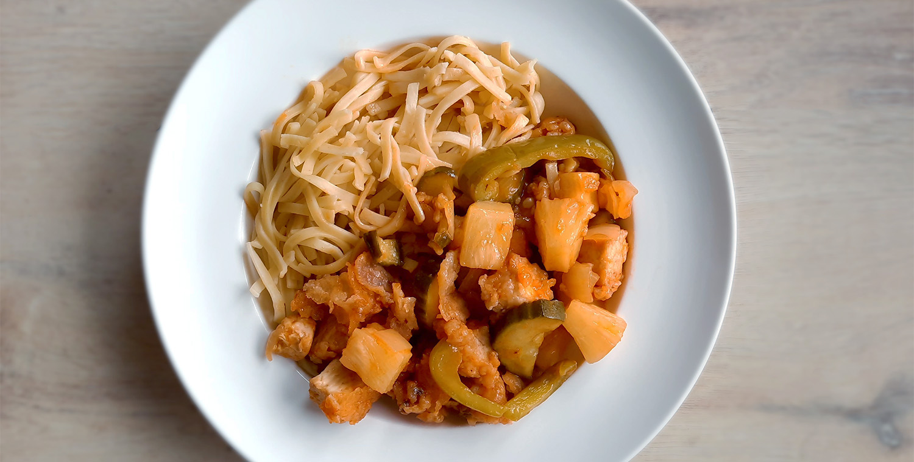

biefstuk chimichurri & gegrilde groenten

bami met spinazie

japanse beef teriyaki

salade met gegrilde ananas

koreaanse bibimbap

falafelwrap

vega ku lo yuk
De vega variant van Ku lo yuk.

Bereidingsduur: 60 minuten
Aantal personen: 4
Ingrediënten:
500 gram tofu
1 stuk paprika
1 ui
1 komkommer
2 eetlepels sojasaus
2 theelepels gemberpoeder
100 gram maizena
120 milliliter ketchup
90 milliter azijn
100 milliliter groentebouillon
1 blikje ananasstukjes
200 gram bami
zonnebloemolie
sambal
kroepoek
500 gram tofu
1 stuk paprika
1 ui
1 komkommer
2 eetlepels sojasaus
2 theelepels gemberpoeder
100 gram maizena
120 milliliter ketchup
90 milliter azijn
100 milliliter groentebouillon
1 blikje ananasstukjes
200 gram bami
zonnebloemolie
sambal
kroepoek
Instructies:
1. Dep de tofu droog en snijd in kleine stukjes. Meng dit met 1 eetlepel sojasaus, 1 theelepel gemberpoeder en 1 eetlepel maizena. Laat dit 15 minuten staan. Snijd ondertussen de ui en komkommer in kleine stukjes en de paprika in reepjes.
2. Verhit een laag zonnebloemolie in een wokpan tot er damp vanaf komt. Verdeel de rest van de maizena over de tofu en meng nog eens goed. Klop de overtollige maizena eraf. Frituur de tofu in etappes in de pan totdat de blokjes goudbruin zijn en laat uitlekken op een bord.
3. Maak de bami klaar zoals aangegeven op de verpakking. Roerbak de ui, paprika en komkommer in 5 minuten in een wokpan. Voeg de ketchup, azijn, bouillon, 1 eetlepel sojasaus en 1 theelepel gemberpoeder toe en kook iets in. Roer 1 eetlepel maizena en 2 eetlepels water in een klein kommetje en voeg dit toe aan de saus.
4. Schep de tofu, ananas en wat ananassap erdoorheen. Serveer met sambal, bami en kroepoek.
1. Dep de tofu droog en snijd in kleine stukjes. Meng dit met 1 eetlepel sojasaus, 1 theelepel gemberpoeder en 1 eetlepel maizena. Laat dit 15 minuten staan. Snijd ondertussen de ui en komkommer in kleine stukjes en de paprika in reepjes.
2. Verhit een laag zonnebloemolie in een wokpan tot er damp vanaf komt. Verdeel de rest van de maizena over de tofu en meng nog eens goed. Klop de overtollige maizena eraf. Frituur de tofu in etappes in de pan totdat de blokjes goudbruin zijn en laat uitlekken op een bord.
3. Maak de bami klaar zoals aangegeven op de verpakking. Roerbak de ui, paprika en komkommer in 5 minuten in een wokpan. Voeg de ketchup, azijn, bouillon, 1 eetlepel sojasaus en 1 theelepel gemberpoeder toe en kook iets in. Roer 1 eetlepel maizena en 2 eetlepels water in een klein kommetje en voeg dit toe aan de saus.
4. Schep de tofu, ananas en wat ananassap erdoorheen. Serveer met sambal, bami en kroepoek.